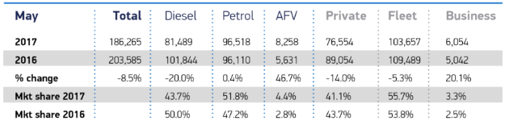
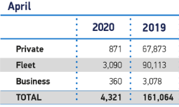
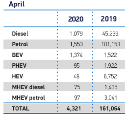
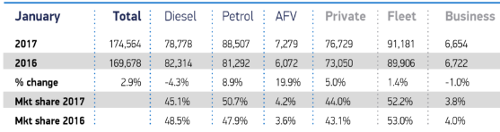

Project Goal
To obtain additional monthly car registration data to add to my DVLA Registration Dashboard in Tableau.
Monthly Vehicle Registration by Fuel Type and Keepership
This is additional data being added to the DVLA Registered Vehicles dashboard I maintain on Tableau. The DVLA data is issued annually and only gives annual totals for registered vehicles. SMMT publish data monthly in an image format and this project, grabs that data from the images and processes it into a CSV file suitable for import into Tableau.
https://public.tableau.com/authoring/VehiclesRegisteredforUKdf_VEH0220/F
Intent
Extract data from SMMT Public Vehicle Registration Data published monthly in png and jpg image format, of varying image sizes, and then parse this data into a database to enable querying through a dashboard.
Important Note
The SMMT (Society of Motor Manufacturers and Traders) make their data available to the public through their news publication service. The data published by the SMMT is copyright and for this project I have applied a random percentage to the data to ensure the SMMT copyright is maintained.
If you wish to source data from the SMMT, please contact them directly: https://www.smmt.co.uk/vehicle-data/production-reports/
Preparation
Obtain Images
The images can be downloaded from the SMMT website and Google Images,
however the URLs are not consistent :-) and while 20% of these files
were downloaded with an automated wget attempt, there were
still significant errors from missing files. This meant, hand
downloading the missing files that failed the wget attempt
using a logical expansion.
Check Images
A sanity check was performed to check for inconsistencies in image sizes which would affect the OCR process.
check\_image\_sizes.py script
This script produces a report summarising the image sizes.

Image sizes were not consistent.
From this it’s clear the cropping function calls will need to be adapted to the different images sizes and formats.
Image data layout
SMMT produced data in two formats that changed over time:
The OLD format contained both fuel type and Keepership type in one image:
| Source Image - Old Format fuel and customer in one | Cropped Image |
|---|---|

|
 |
I only want the month data, the year data can be calculated, and sticking to monthly data simplifies everything.
The image is cropped before the OCR function to limit the OCR to a area of the image I’m interested in and limit extraneous data being captured.
The newer format separated fuel type and Keepership type into two separate images.
| Source Image - New Format Keepership | Cropped Image |
|---|---|

|
 |
| Source Image - New Format Fuel Type | Cropped Image |

|
 |
Data Structures
I’m after a consistent monthly figure from this data, along with additional fields that can be used to validate results and spot any OCR errors not picked up during the during the OCR conversion process. While it’s not necessary to capture a total row, the Total row can be used to to validate accuracy, so while not required for the final data set, it’s helpful for validation.
| Field Name | Contents | Type | Description |
|---|---|---|---|
| Usage |
Public Private |
string | Public dashboard data is scrambled |
| Source |
new old |
String |
Which format the data came from old or new |
| Year | The year of the data | Int | Useful helpers in Tableau sometimes |
| Month | The month of the data | String | Useful helpers in Tableau sometimes |
| Topcat |
Fossil Fuel Renewable Fuel |
String | Top Category |
| Subcat |
Petrol Diesel MHEV Petrol MHEV Diesel Plugin Hybrid (PHEV) Battery Electric (BEV) Hybrid Electric (HEV) Fleet Private Business Total |
String | Sub Category |
| Quantity | Number of vehicles shipped | Int | |
| Acquire_Date | Date | Date the data was acquired and entered into the db | |
| Acquire_By | String | Who acquired the data | |
| Acquire_Method |
Tesseract |
String | Data Acquisition Method |
Breaking down the tasks
- OCR Image files into a text file for three different layouts
- Data Cleanse
- Feature Engineering
- Reformat csv through pandas into long format, save in a new csv with additional engineered features
Caveats
- There are two layout formats in the images, I’ll call them old-format and new-format
- The image sizes change
- for data through 2023 the image sizes have been consistent
- Prior to this image sizes can vary a lot, attempting to calculate
image crop dimensions from image sizes was inconsistent, sometimes
pillowdoesn’t report the right image dimension in the old formats, not sure why, so images have to manually sorted into sizes which is identified in the file name by adding ‘x’ e.g. 201x6 - However on the up side, for the old image formats, we only need the full width and half the height of the image to ocr so we can math that.
- There’s no primary source for dates prior to Oct 2016,but we can get that data from the previous year listed in the old format for the following year e.g. Oc-2015 data comes from the Oct-2016 image.
Order of operations
1. Image to Text conversion
- Dual Type - Old Format : Crop and OCR images, for both fuel type and keepership, store results in a text file .TXT
- Fuel Type - NEW Format : Crop and OCR images, for Fuel Types, store results in a text file .TXT
- Keepership Type - NEW Format : Crop and OCR images, for Fuel Types, store results in a text file .TXT
2. Data Cleansing
- Fuel Type - Old Format : data cleanse TXT File, format and save into a CSV
- Fuel Type - NEW Format : data cleanse TXT File, format and save into a CSV
- Keepership Type - NEW Format : data cleanse TXT File, format and save into a CSV
3. Feature engineering, Feature additions, error checking and correction
The OCR process creates errors.
While steps are taken during the Feature Engineering stage to identify these errors, additional efforts are required:
The Mk1 eyeball is also needed.
The final validation check for this stage is to ensure there are a consistent number of fields for each record and that the right values are being detected for
intandstrings- Dual Type - Old Format : Add top level category for fuel types, convert fuel types into sub categories, validation check / error reporting, save to csv
- Fuel Type - NEW Format : Add top level category for fuel types, convert fuel types into sub categories, validation check / error reporting, save to csv
- Keepership Type - NEW Format : Add top level category for fuel types, convert fuel types into sub categories, validation check / error reporting, save to csv
So we’ve got nine operations to carry out across 145 image files of different image layouts and image dimensions.
Notebooks and outputs
New Format Fuel Type
1a-OCR-fueltype-newformat.ipynb
1a-OCR-fueltype-newformat.ipynb

Crop and OCR images
Store results in a text file
../ocr/OUT_1a_fueltype_OCR_newformat-2023
Example output stored in the text file:
MAY
2023 2022
Diesel 5758 7614
Petrol 59766 56767
MHEVdiesel 5316 5823
MHEV petrol 23034 16842
BEV 24513 15448
PHEV 9025 7339
HEV 17792 14561
TOTAL 145204 1243941b-smmt-CLEANSE-fueltype-newformat.ipynb
Data cleanse TXT File, format and save into a CSV
../ocr/OUT_1b_fueltype_CLEANSE_newformat-2023.csv
Example output stored in CSV file
May,,
,2023,2022
Diesel,5758,7614
Petrol,59766,56767
MHEV_Diesel,5316,5823
MHEV_Petrol,23034,16842
BEV,24513,15448
PHEV,9025,7339
HEV,17792,14561
TOTAL,145204,1243941c-smmt-data-SAVE-fueltype-newformat.ipynb
Add top level category for fuel types, convert fuel types into sub
categories, validation check / error reporting, shuffle data into the
right fields, save to csv
../ocr/OUT_1c_fueltype_newformat_FINISHED-2023.csv
Example output store in CSV file
0,Private,Primary,2023,May,Fossil,Diesel,5758,06-12-23,Tesseract-new,Manual,May-2023
1,Private,Secondary,2022,May,Fossil,Diesel,7614,06-12-23,Tesseract-new,Manual,May-2022
2,Private,Primary,2023,May,Fossil,Petrol,59766,06-12-23,Tesseract-new,Manual,May-2023
3,Private,Secondary,2022,May,Fossil,Petrol,56767,06-12-23,Tesseract-new,Manual,May-2022
4,Private,Primary,2023,May,xHEV,MHEV_Diesel,5316,06-12-23,Tesseract-new,Manual,May-2023
5,Private,Secondary,2022,May,xHEV,MHEV_Diesel,5823,06-12-23,Tesseract-new,Manual,May-2022
6,Private,Primary,2023,May,xHEV,MHEV_Petrol,23034,06-12-23,Tesseract-new,Manual,May-2023
7,Private,Secondary,2022,May,xHEV,MHEV_Petrol,16842,06-12-23,Tesseract-new,Manual,May-2022
8,Private,Primary,2023,May,Plugin,BEV,24513,06-12-23,Tesseract-new,Manual,May-2023
9,Private,Secondary,2022,May,Plugin,BEV,15448,06-12-23,Tesseract-new,Manual,May-2022
10,Private,Primary,2023,May,Plugin,PHEV,9025,06-12-23,Tesseract-new,Manual,May-2023
11,Private,Secondary,2022,May,Plugin,PHEV,7339,06-12-23,Tesseract-new,Manual,May-2022
12,Private,Primary,2023,May,xHEV,xHEV,17792,06-12-23,Tesseract-new,Manual,May-2023
13,Private,Secondary,2022,May,xHEV,xHEV,14561,06-12-23,Tesseract-new,Manual,May-2022
14,Private,Primary,2023,May,Total,Total,145204,06-12-23,Tesseract-new,Manual,May-2023
15,Private,Secondary,2022,May,Total,Total,124394,06-12-23,Tesseract-new,Manual,May-2022New Format Keepership Type
3a-OCR-custtype-newformat.ipynb
Crop and OCR images
Store results in a text file
../ocr/OUT_3a_custtype_OCR_newformat-2023
Example output stored in the text file:
MAY
2023 2022
Private 65932 66242
Fleet 76207 55649
Business 3065 2503
TOTAL 145204 1243943b-smmt-CLEANSE-custtype-newformat.ipynb3c-smmt-SAVE-custtype-newformat.ipynb
validation check / error reporting, save to csv
../ocr/OUT_3c_custtype_newformat-FINISHED-2023.csv
Example output store in CSV file
,Usage,Source,Year,Month,Topcat,Subcat,Quantity,Acquire_Date,Acquire_By,Acquire_ Method,fileDate
8,Private,Primary,2023,May,Customer,Private,65932,06-12-23,Tesseract-new,Manual,May-2023
9,Private,Secondary,2022,May,Customer,Private,66242,06-12-23,Tesseract-new,Manual,May-2022
10,Private,Primary,2023,May,Customer,Fleet,76207,06-12-23,Tesseract-new,Manual,May-2023
11,Private,Secondary,2022,May,Customer,Fleet,55649,06-12-23,Tesseract-new,Manual,May-2022
12,Private,Primary,2023,May,Customer,Business,3065,06-12-23,Tesseract-new,Manual,May-2023
13,Private,Secondary,2022,May,Customer,Business,2503,06-12-23,Tesseract-new,Manual,May-2022
14,Private,Primary,2023,May,Customer,Total,145204,06-12-23,Tesseract-new,Manual,May-2023
15,Private,Secondary,2022,May,Customer,Total,124394,06-12-23,Tesseract-new,Manual,May-2022OLD Format Fuel & Keepership Type
2a-tesseract-dualtype-oldformat.ipynb

Crop and OCR images.

Save results in a text file
../ocr/OUT_2a_dualtype_OCR_oldformat-2023.txt
Example output stored in the text file:
October Total Diesel Petrol AFV Private Fleet Business
2016 180168 89004 85139 6025 77821 96440 5907
2015 177664 91177 81125 5362 78662 92596 6406
change 144 244 49 1244 11 42 78
Mkt share 2016 4944 473 33 432 535 33
Mkt share 2015 513 457 30 443 521 362b-smmt-CLEANSE-dualtype-oldformat.ipynb
Data cleanse TXT File, format into csv.
Save into a CSV
../ocr/OUT_3a_custtype_CLEANSE_oldformat-2023.csv
Example output stored in CSV file
October,Total,Diesel,Petrol,AFV,Private,Fleet,Business
2016,180168,89004,85139,6025,77821,96440,5907
2015,177664,91177,81125,5362,78662,92596,64062c-smmt-SAVE-dualtype-oldformat.ipynb
Validation check / error reporting, variable shuffling with pandas and recovery of OLD data without a primary source.
Save to csv
../ocr/OUT_2c_dualtype_oldformat-FINISHED-2023.csv
Example output store in CSV file
| ,Usage,Source,Year,Month,Topcat,Subcat,Quantity,Acquire_Date,Acquire_By,Acquire_Method,fileDate 0,Private,Primary,2016,October,Fuel_TOTAL,Total,180168,03-07-23,tesseract-old,Manual,October-2016 1,Private,Primary,2016,October,Fossil,Diesel,89004,03-07-23,tesseract-old,Manual,October-2016 2,Private,Primary,2016,October,Fossil,Petrol,85139,03-07-23,tesseract-old,Manual,October-2016 3,Private,Primary,2016,October,Xhev,AFV,6025,03-07-23,tesseract-old,Manual,October-2016 4,Private,Primary,2016,October,Customer,Private,77821,03-07-23,tesseract-old,Manual,October-2016 5,Private,Primary,2016,October,Customer,Fleet,96440,03-07-23,tesseract-old,Manual,October-2016 6,Private,Primary,2016,October,Customer,Business,5907,03-07-23,tesseract-old,Manual,October-2016 7,Private,Secondary,2015,October,Fuel_TOTAL,Total,177664,03-07-23,tesseract-old,Manual,October-2015 8,Private,Secondary,2015,OctoberFossil,Diesel,91177,03-07-23,tesseract-old,Manual,October-2015 9,Private,Secondary,2015,OctoberFossil,Petrol,81125,03-07-23,tesseract-old,Manual,October-2015 10,Private,Secondary,2015,OctoberXhev,AFV,5362,03-07-23,tesseract-old,Manual,October-2015 11,Private,Secondary,2015,OctoberCustomer,Private,78662,03-07-23,tesseract-old,Manual,October-2015 12,Private,Secondary,2015,OctoberCustomer,Fleet,92596,03-07-23,tesseract-old,Manual,October-2015 13,Private,Secondary,2015,OctoberCustomer,Business,6406,03-07-23,tesseract-old,Manual,October-2015 |
Last Steps
The last steps are manual, recovering the missing data from primary source (Oct-2015 to Sep-2016) is achieved by using the data from images from the following year. Since it’s simpler to just grab all the data, primary data (the data for the file it’s dated for) and secondary data (the previous year is detailed in the file hence why we can recover 2015 data from the 2016 files) is grabbed at this stage but tagged with it’s source: primary or secondary. While it’s simple to filter current primary data using the source field = ‘primary’ this would miss the missing primary data, so the final manual step is to sort the data file by date and change the source flag for Oct-2015 - Sep-2016 to primary and since we are already manually editing the file, we may as well remove the secondary data while we are at it.
Data is also ‘scambled’ a bit to hide the true numbers because the
SMMT sell their data as a service and while this is not for commercial
use, it is the compelte data set in CSV format from 2015 to the current
day, so it’s quite valuable. The usage column is a flag for
me, Private is the real data, Public is the scrambled data you see on
the Tableau dashboard.